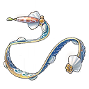

추천 광추
거울 속 지난날의 나
격파 특수효과와 전투 스킬 포인트를 챙기는 범용 선택입니다.
효과 자세히
격파 특수효과가 60% 오릅니다. 필살기 사용 후 아군이 가하는 피해가 3턴 동안 24% 증가하고, 완·매의 격파 특수효과가 150% 이상이면 전투 스킬 포인트를 1pt 회복합니다. 새 웨이브마다 아군이 에너지를 10pt 회복합니다.
바람을 쫓을 때
파티의 격파 피해와 슈퍼 격파 피해를 모두 높입니다.
효과 자세히
1~5중첩에서 전투 진입 후 모든 아군이 가하는 격파 피해가 16~24% 증가합니다. 슈퍼 격파에도 적용되며 같은 효과끼리는 중첩되지 않습니다. 필살기에 필요한 에너지는 매듭과 파티 구성으로 보완하세요.
기억 속 모습
격파 특수효과와 필살기 회전을 함께 챙기는 4성 대안입니다.
효과 자세히
5중첩은 격파 특수효과 56%와 공격 후 에너지 8pt를 제공합니다. 승급 4단계 행적, 에너지 회복효율 매듭 +15와 생명의 바커 공을 갖추면 전투 스킬 1회와 일반 공격 2회로 필살기를 다시 쓸 수 있습니다.
맞물린 톱니
필살기가 늦을 때 쓰기 좋은 3성 에너지 광추입니다.
효과 자세히
공격하거나 피격되면 해당 턴에 한 번 에너지를 8pt 회복합니다. 승급 4단계 행적과 에너지 회복효율 매듭 +15, 생명의 바커 공을 맞추면 전투 스킬 1회와 일반 공격 2회로 필살기를 다시 쓸 수 있습니다. 격파 특수효과와 생존은 유물에서 보완하세요.
댄스! 댄스! 댄스!
필살기로 아군의 행동을 앞당겨 공격 기회를 만듭니다.
효과 자세히
필살기 사용 후 1~5중첩에서 모든 아군의 행동 게이지가 16~24% 증가합니다. 아군이 적의 회복이나 사이클 종료 전에 한 번 더 움직이도록 필살기 타이밍을 맞출 때 좋습니다.
추천 유물
꿈을 조작하는 시계공 4 · 생명의 바커 공 2
- 머리
 주옵션HP부옵션격파 특수효과 · 속도 · HP% / 방어력% · 효과 저항
주옵션HP부옵션격파 특수효과 · 속도 · HP% / 방어력% · 효과 저항 - 손
 주옵션공격력부옵션격파 특수효과 · 속도 · HP% / 방어력% · 효과 저항
주옵션공격력부옵션격파 특수효과 · 속도 · HP% / 방어력% · 효과 저항 - 몸통
 주옵션HP% / 방어력%부옵션격파 특수효과 · 속도 · HP% / 방어력% (주옵션 제외) · 효과 저항
주옵션HP% / 방어력%부옵션격파 특수효과 · 속도 · HP% / 방어력% (주옵션 제외) · 효과 저항 - 다리
 주옵션속도부옵션격파 특수효과 · HP% / 방어력% · 효과 저항
주옵션속도부옵션격파 특수효과 · HP% / 방어력% · 효과 저항 - 구체
 주옵션HP% / 방어력%부옵션격파 특수효과 · 속도 · HP% / 방어력% (주옵션 제외) · 효과 저항
주옵션HP% / 방어력%부옵션격파 특수효과 · 속도 · HP% / 방어력% (주옵션 제외) · 효과 저항 - 매듭

주옵션에너지 회복효율부옵션격파 특수효과 · 속도 · HP% / 방어력% · 효과 저항
이 조합을 추천하는 이유
꿈을 조작하는 시계공 4세트는 필살기 후 아군의 격파 특수효과를 2턴 동안 30% 높입니다. 생명의 바커 공은 에너지 회복효율을 5% 높이고, 속도 120 이상에서 첫 행동을 40% 앞당깁니다.
가상공간을 누비는 메신저 2 + 꿈을 조작하는 시계공 2 · 아공간 이상 사물 수용소 2
- 머리
 주옵션HP부옵션속도 145까지 · 격파 특수효과 · HP% / 방어력% · 효과 저항
주옵션HP부옵션속도 145까지 · 격파 특수효과 · HP% / 방어력% · 효과 저항 - 손
 주옵션공격력부옵션속도 145까지 · 격파 특수효과 · HP% / 방어력% · 효과 저항
주옵션공격력부옵션속도 145까지 · 격파 특수효과 · HP% / 방어력% · 효과 저항 - 몸통
주옵션HP% / 방어력%부옵션속도 145까지 · 격파 특수효과 · HP% / 방어력% (주옵션 제외) · 효과 저항
- 다리
주옵션속도부옵션격파 특수효과 · HP% / 방어력% · 효과 저항
- 구체
 주옵션HP% / 방어력%부옵션속도 145까지 · 격파 특수효과 · HP% / 방어력% (주옵션 제외) · 효과 저항
주옵션HP% / 방어력%부옵션속도 145까지 · 격파 특수효과 · HP% / 방어력% (주옵션 제외) · 효과 저항 - 매듭
 주옵션에너지 회복효율부옵션속도 145까지 · 격파 특수효과 · HP% / 방어력% · 효과 저항
주옵션에너지 회복효율부옵션속도 145까지 · 격파 특수효과 · HP% / 방어력% · 효과 저항
이 조합을 추천하는 이유
다른 아군이 시계공 4세트를 쓰면 메신저 2세트와 시계공 2세트로 속도와 격파 특수효과를 챙기세요. 아공간 이상 사물 수용소는 속도 145 이상일 때 아군의 격파 특수효과를 18% 높입니다. 같은 장신구 효과는 중첩되지 않습니다.
이 정도면 잘 키웠다
승급 2단계 행적의 20%만 반영한 기준입니다. 다른 전투 중 버프가 있으면 전투 밖 목표를 낮출 수 있습니다.
바커 공 세팅은 134를 출발점으로 삼으세요. 수용소 발동에는 145 이상이 필요하며, 이후에는 아군의 행동 순서에 맞춰 조정하세요.
5성 에너지 회복효율 매듭 +15 기준 119.4%, 바커 공을 더하면 124.4%입니다.
캐릭터 상세 화면 기준 생존 목표입니다. 몸통과 구체, 광추에 따라 달라집니다.
목표 스탯을 볼 때
완·매와 광추 Lv.80, 주요 행적 해금, 5성 유물 +15를 기준으로 한 목표입니다. 전투 중 격파 특수효과 180%는 승급 6단계 행적의 피해 증가 상한입니다. 슈퍼 격파 중심 파티라면 파티에 필요한 속도와 필살기 주기를 먼저 맞춰도 됩니다.
성혼과 추천 돌파
명함(E0)에서도 약점 격파 효율, 모든 속성 저항 관통, 격파 상태 연장을 모두 지원합니다. 성혼을 더 올린다면 파티 피해에 폭넓게 적용되는 E1을 우선 고려하세요.
1결계 중 아군이 적 방어력 20% 무시추천
결계가 켜져 있는 동안 아군의 공격 피해와 격파·슈퍼 격파 피해에 적용됩니다. 파티 피해를 더 높이고 싶을 때 우선 고려할 성혼입니다.
2격파된 적에게 피해를 가할 때 공격력 40% 증가
완·매가 전투에 있으면 아군이 약점 격파 상태의 적에게 피해를 가할 때 발동합니다. 공격력에 비례하는 피해 비중이 큰 파티에서 효율이 높습니다.
3필살기와 특성 레벨 +2
필살기의 저항 관통, 특성의 속도 보조와 격파 피해 배율을 높입니다.
4적 격파 시 자신의 격파 특수효과 100% 증가
3턴 동안 완·매 자신의 특성 격파 피해와 필살기의 행동 지연 효과가 커집니다.
5전투 스킬 레벨 +2, 일반 공격 레벨 +1
전투 스킬의 피해 증가량과 일반 공격 피해가 오릅니다. 약점 격파 효율 증가량은 스킬 레벨과 무관합니다.
6필살기 결계 1턴 연장, 특성 격파 피해 강화
특성의 격파 피해 배율이 200%p 증가합니다. 필살기를 3턴마다 사용할 수 있는 세팅에서는 결계를 이어서 유지할 수 있습니다.
추천 파티


기본 운영과 행적
전투 역할
완·매는 지니어스 클럽 #81 회원이자 5성 얼음·화합 캐릭터입니다. 전투 스킬로 아군이 가하는 피해와 약점 격파 효율을 높입니다. 필살기의 결계는 아군의 모든 속성 저항 관통을 높이고, 결계 중 아군이 공격한 적의 약점 격파 상태를 연장할 수 있습니다.
- 전투 스킬 효과가 유지되는 동안 일반 공격으로 전투 스킬 포인트를 확보하세요.
- 격파 파티에서는 약점 격파 효율과 격파 상태 연장 덕분에 강인성을 깎는 시간은 줄고, 슈퍼 격파를 가할 수 있는 시간은 늘어납니다.
광추와 유물
- 광추는 전용 「거울 속 지난날의 나」를 쓰거나, 대안으로 「기억 속 모습」을 사용할 수 있습니다. 에너지 수급이 필요하다면 3성 「맞물린 톱니」 5중첩도 선택지입니다.
- 터널 유물은 격파 파티에서 「꿈을 조작하는 시계공」 4세트를 고려하세요. 속도나 격파 특수효과가 붙은 2세트 조합으로 시작해도 됩니다.
- 차원 장신구는 「생명의 바커 공」 2세트로 에너지 회복효율을 챙길 수 있습니다. 속도 120 이상이면 전투 시작 시 행동도 앞당깁니다.
- 주옵션은 몸통 HP% 또는 방어력%, 신발 속도, 차원 구체 HP% 또는 방어력%, 연결 매듭 에너지 회복효율을 권장합니다.
행적과 부옵션
전투 스킬·필살기·특성을 먼저 강화하고 일반 공격은 뒤로 두세요. 부옵션은 격파 특수효과와 속도를 위주로 고릅니다.
- 승급 6단계에서 해금되는 행적은 완·매의 전투 중 격파 특수효과가 180%일 때 전투 스킬의 피해 증가 효과를 최대로 높입니다.
기준과 출처 · 2026-11-24
HoYoverse 캐릭터 프리뷰 및 Prydwen 3.4 주요 빌드 분석 기반 입문 세팅